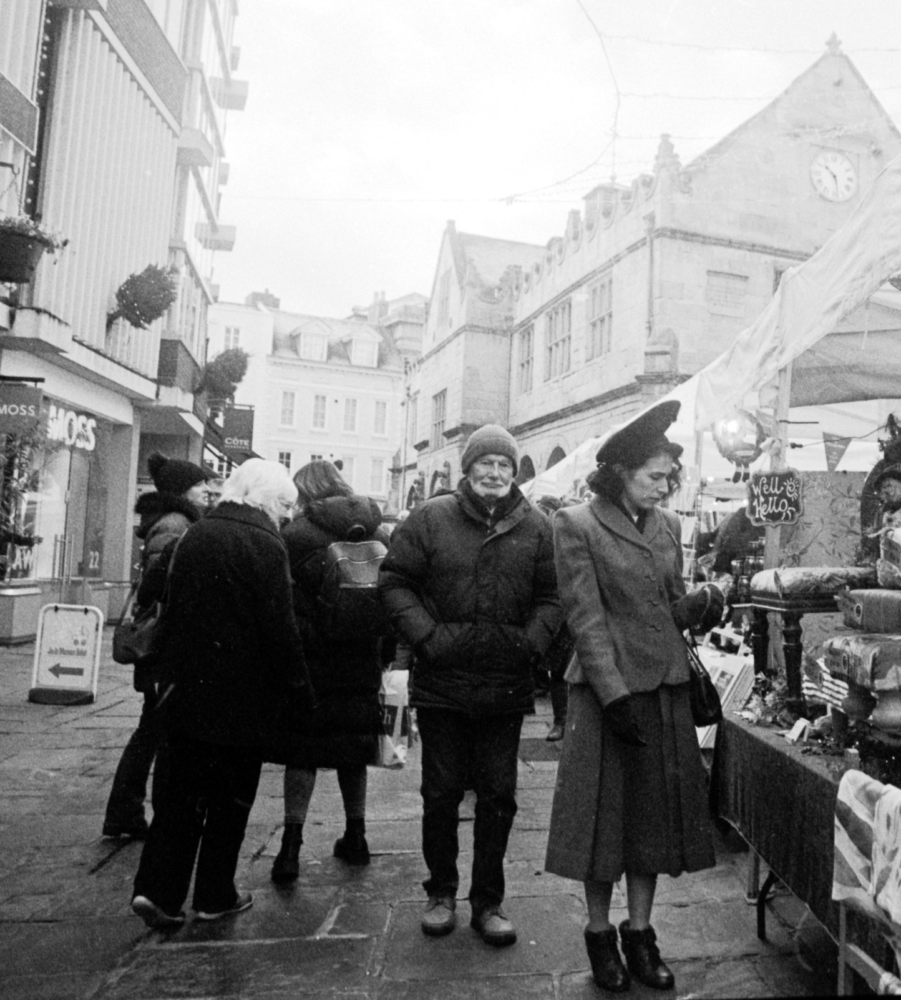

The Expressive Camera
An Untitled Presentation
I am a timid photographer
Subjects often have their backs to me
Or are well out of my way
I need to be bolder
...and face the fear
A long lens helps
...but friendship is better
Out & about among the shoppers
Coffee offers refuge

The connections we make
are more important than the pictures we take
“All photographs are memento mori. To take a photograph is to participate in another person’s (or thing’s) mortality, vulnerability, mutability. Precisely by slicing out this moment and freezing it, all photographs testify to time’s relentless melt.” ― Susan Sontag